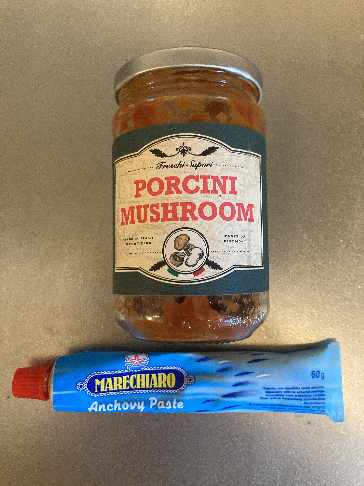

トマソナスパラシメジメカジキ
もはや古代遺跡のようなこのサイトだけれど、ちょっと再利用するネタを思いつけたので。
vimも親指シフトも忘れに忘れてるけど、また触るとこれはこれで楽しいもんだね。
というわけでお久しぶりです。最近パスタにハマっています。
バイト前飯なのでこれが正しい時間 pic.twitter.com/WZOGCb2hnc
— ₍₍⁽⁽🍳₎₎⁾⁾ (@sal_pipr) October 11, 2022
特に数日前作った「トマソナスパラシメジメカジキ」がかなりいい出来だったのですが、誰か他人に振る舞うどころか労働前で爆速で一人で食べきる羽目になってしまって虚しかったのでここに備忘録を残しておきます。 もともと何も書く気じゃなかったので写真ゼロです。ゆるして。
まず最初にパスタの命名方法だけれど、大まかには
「ソース名 → 野菜類 → 肉・魚 → 後乗せするもの → 調味料類」
という順。
今回の「トマソナスパラシメジメカジキ」は、トマトソースのパスタで具はナス、アスパラ、シメジ、メカジキというわけ。省略したが特殊な調味料としてアンチョビを効かせたので、後ろに「チョビ入り」を加えてもいい。
後乗せするものの例としては、しらすや大根おろしなど。例えばペペロンチーノにナスとエビを入れて大根おろしを乗せると「ペペナスエビダイコン」と、ダイコンが後ろに来る。
各々の語からどこを抜き出すかは勘。語感が良ければそれでよろしい。肉・魚はメインなのでなるだけ省略しないが、ぶっちゃけ気分。
ジェノパラベコン！😮
— ₍₍⁽⁽🍳₎₎⁾⁾ (@sal_pipr) October 14, 2022
ジェノむずい pic.twitter.com/s4v06qaeiC
ベコン！😮
使ったものは以下の通り。分量はおおまか。だいたい使う順。
- パスタ：150g
- 水：1.5Lより気持ち少なめ
- 塩：大さじ1弱
- メカジキ：一切れ
- 料理酒：適当
- 塩：適当
- ナス：食べたい分
- サラダ油：それっぽい量
- アスパラ：食べたい分
- しめじ：食べたい分
- オリーブオイル：大さじ2
- にんにく：おそらくひとかけ分
- アンチョビ：小さじ1/2 ~ 1
- 輪切り唐辛子：ふたつまみ
- トマトソース：大さじ3
- 塩：適量
- オイスターソース：小さじ1
- 胡椒：すきなだけ
今回は使ってないけど入れてもいいなと思うもの。
- 醤油：小さじ1
- 砂糖：適量
- オレガノ：小さじ1/2
- 粉チーズ：すきなだけ
メカジキは今が旬。淡白だけれど、魚ならではの味の深みもちゃんとあってすき。めっちゃ推してる。パスタの具以外にも、ソテーやそれこそ肉の代わりにいろいろ使える優秀食材なので、生のものが出回っている間にぜひ一度。
ちなみにトマトがバチバチに合う。ペペでもよし。

トマトソースとアンチョビについて補足。
トマトソースはカルディに売ってるもの。「トマト・ポルチーニ」なのでより正確に言うなら「トマポル」といったところ。ただ、大抵の一般家庭なら家にあるトマトソースは一意に定まると思うので簡単にトマソと呼んでいる。
ひとくちにトマトソースと言ってもいろいろなものが売っているので、今は食べ比べている最中。このトマポルは主張しすぎないポルがなかなか使いやすくてよかった。これがなくなったらまた別のトマトソースを買ってみる予定。
アンチョビはペーストのもの。基本的に調味料として運用するつもりなので、刻む手間がなくてよい。なおペーストそのままつまんでも当然美味しい。
もし家でパスタするなら、何かしらトマトソースは買うべきだけど、アンチョビはお好みでどうぞ。
作り方ダイジェスト。
- 水を鍋で火にかけて沸かす。
- 水が沸騰するのを待ちながら具の準備。野菜をそれぞれいい感じに切っておく。
- メカジキを一辺1cmのサイコロ状に切って、料理酒と塩適量をかけておいておく。
- ナスはそのままだとパスタソースをどんどん吸ってしまうので、先にサラダ油で炒めておく。強火寄りで軽く色がつくまで火を通してしまってOK。この手間を惜しまず入れたナスはとろとろで幸せになれる。1
- 水が沸騰したらパスタを入れる。時間はお好みに合わせて。このパスタ茹でと並行してソースを仕上げる。
- フライパンにオリーブオイルとにんにく、アンチョビを入れてから弱火〜中火にかける。フライパンを先に温めると爆速でにんにくが焦げるのでNG。ナスを炒めたフライパンをそのまま使ってもいいが予熱で火の通りが早いので注意。
- にんにくがシュワシュワ言って色がついてきたら輪切り唐辛子とメカジキを入れる。早めに入れてフライパンの温度を下げないとにんにくが焦げるのでちょっと急ぎめ。
- それっぽいタイミングで残りの具を入れる。火の通りづらい順。今回はどれも火の通りやすい具だが、強いて言うならアスパラ、しめじ、ナス2。
- 具がいい感じになったらトマトソースを入れる。このトマトソースは固めなので、適宜茹で汁をフライパンに加えて伸ばす。トロトロとサラサラの中間くらいを目指す。
- 塩などで味調整。今回はオイスターソースを入れた。醤油や砂糖を使ってもいい。オレガノも入れるならここ。このタイミングで味を決めきってしまうのがコツ。
- 慣れると一連のソースの作業がパスタが茹であがる前に終わる。ソースはフライパンの火を落とせばパスタが茹であがるのを待てるが、逆は厳しいので、不安なら先にソースを仕上げてしまうとよい。ソースが軽くふつふつ沸いた状態にしてパスタを入れる。
- パスタを振って3ソースの微調整。パチパチ焦げるような音がするなら茹で汁、ベチャベチャ水っぽい音がしたらオリーブオイルを追加。まあ細かくこだわらなくても美味しいんだけどね。この調整をしながら火はもう落としてしまう。
- パスタを一本味見して塩で最終調整。これをサボるとたまに後悔する。
- 皿に盛る。皿は先に準備しておこう。
- 胡椒や粉チーズなど仕上げのものをかけて完成。
- 熱いうちに食べよう。
全部文字だとわかりづらすぎて笑った。強い要望があれば写真付きで書き直します。
めちゃ慣れるとゼロから20分くらいで一皿作れちゃうパスタ、もし気になる人はぜひチャレンジしてみて。